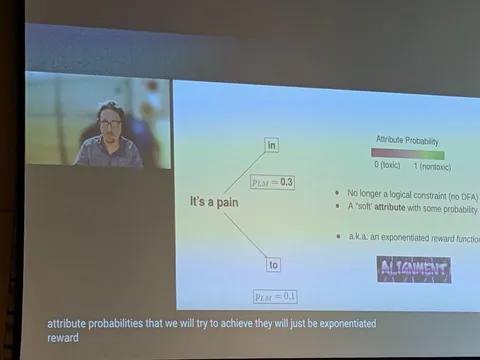
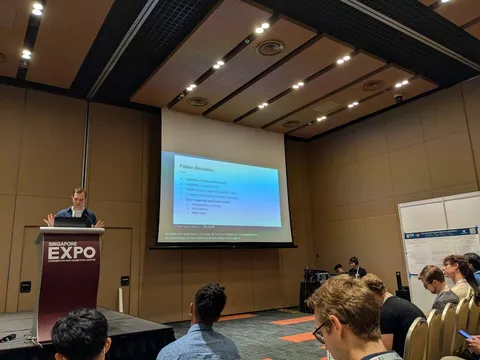
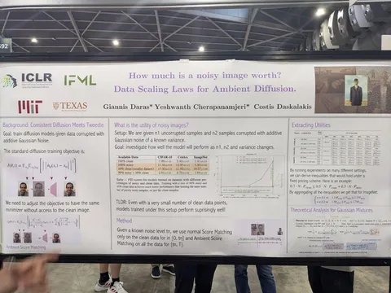
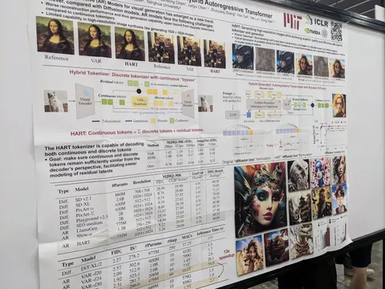
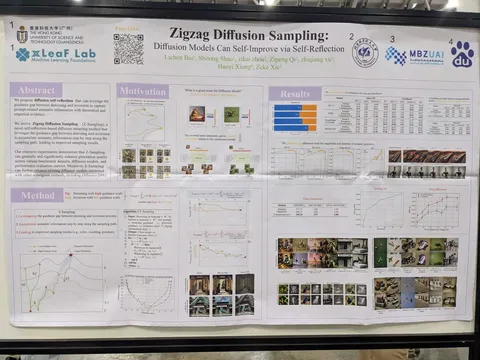
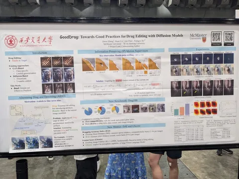
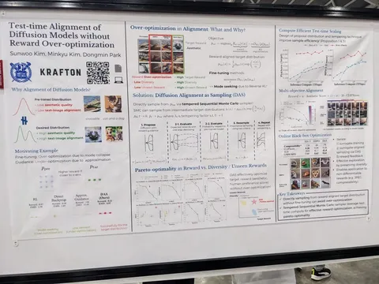

Конференция прошла, а интересные статьи, которые мы не успели упомянуть в наших подборках, — остались. Александр Шишеня, ведущий разработчик службы компьютерного зрения, отобрал и прокомментировал несколько работ, заслуживающих внимания.
Symbolic reasoning about LLMs
- Подход Ctrl-G позволяет модели генерировать ответ, который подчиняется жёстким условиям (например, валидный JSON). Основан на использовании детерминистического конечного автомата и скрытой марковской цепи в дополнение к обученной LLM.
- Можно навешивать мягкие ограничения в виде дополнительной LLM, заточенной на сдвиг генерации в нужное направление (например, убирать токсичность).
Neural Networks as Graphs
Используют графовую нейросеть для генерации апдейтов весов сети при обучении. Лучший результат получается, если чередовать такие нейросетевые апдейты с итерациями Adam. Один из авторов работы — Борис Князев.
Training Language Models in Academia: Challenge or Calling?
У академии на несколько порядков меньше ресурсов, чем у индустрии. Какую же роль в таком случае может играть академия в современном DL? Автор даёт свой ответ: возможностей академии хватает, чтобы делать полезный ресерч, а жёсткие ограничения диктуют направление развития — это оптимизация ресурсов и поиск подходов по ускорению обучения. В качестве доказательства приводится список работ Best Paper Awards ICML 2025, где большинство работ выполнено академией. Сомнительное доказательство — ведь можно предположить, что индустрии просто не так важно публиковаться, да и коммерческую тайну никто не отменял.
How much is a noisy image worth? Data Scaling Laws for Ambient Diffusion
Эффективно используются шумные данные для обучения диффузии. Выведен специальный лосс, который применяется к шумным сэмплам, а для чистых данных используется обычный лосс.
HART: Efficient Visual Generation with Hybrid Autoregressive Transformer
Статья от MIT и NVIDIA. Предлагается картиночный токенизатор, который генерирует дискретные токены и непрерывные поправки к ним. Далее дискретные токены предсказываются авторегрессионной моделью, а непрерывные — легковесной диффузионной моделью.
Zigzag Diffusion Sampling: Diffusion Models Can Self-Improve via Self-Reflection
Улучшают качество генерации изображений, чередуя прямую генерацию с высоким гайденсом и обратную генерацию с низким гайденсом.
GoodDrag: Towards Good Practices for Drag Editing with Diffusion Models
Редактирование изображений с помощью варпа. Фишка в том, что итерации варпа и денойзинга применяются попеременно — это позволяет достичь лучшего качества, чем последовательное применение сначала полного варпа, а потом расшумления.
Test-time Alignment of Diffusion Models without Reward Over-optimization
Элайнмент диффузионной модели на этапе сэмплирования. RL-Objective можно явно оптимизировать и выразить целевую плотность вероятности через плотность вероятности претренированной модели и реворд-функцию. Дальше сэмплируются сразу несколько траекторий, попутно отсеивая траектории с низким ревордом, добавляя новые и постепенно уменьшая силу гайденса.
CV Time
#YaICLR
